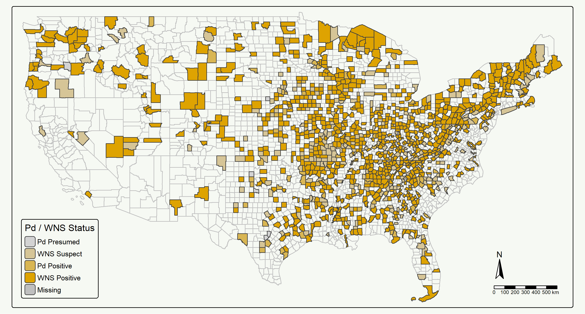
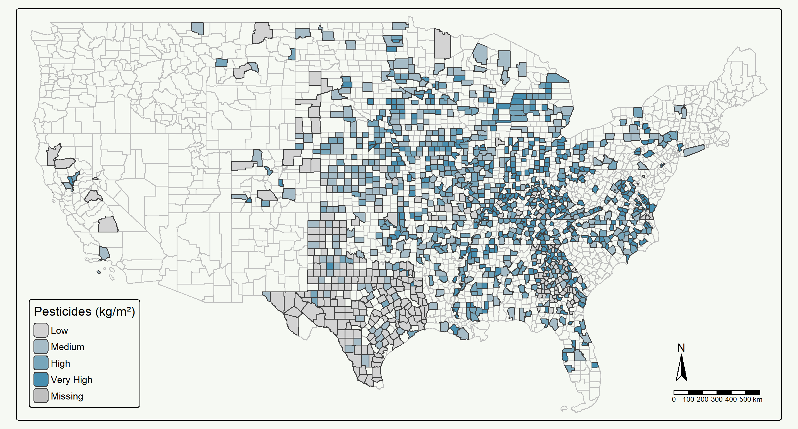
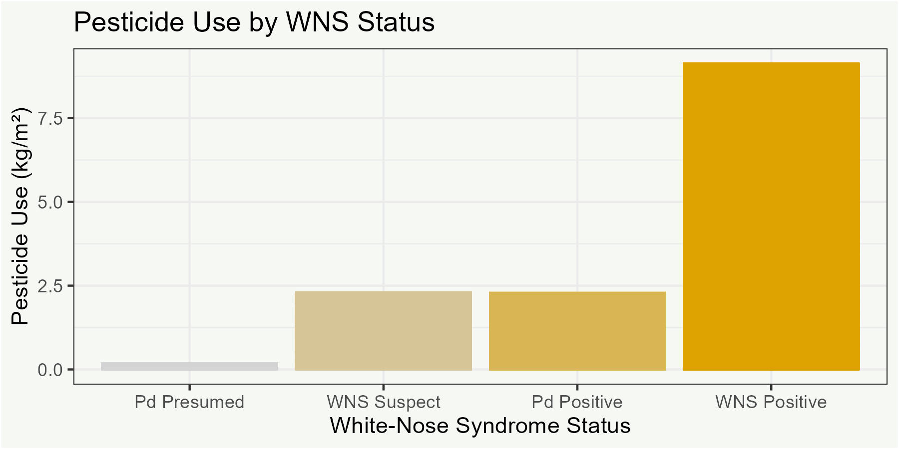

Code
#Load libraries
library(here)
library(tidyverse)
library(sf)
library(tmap)
library(viridisLite)
library(biscale)
library(lubridate)Investigating the connection between White-nose syndrome in bats and increases in pesticide use in agriculture.
We will investigate the impacts to crop production from an infectious fungal disease affecting bats.The fungus Pseudogymnoascus destructans causes white-nose syndrome in hibernating bats and has spread across the United States. Declining bat populations are expected to have substantial impacts on the environment, specifically agriculture. Bats eat insects that damage crops and the consumption of these insects by bats saves farmers billions of dollars in pest control services annually. We will map white-nose syndrome occurrence and pesticide use by county across the US. The white-nose syndrome data from USGS is a time series of categorical presence/absence data of the disease and fungus. The pesticide use data is a time series of continuous concentration data by US counties. We will run a linear regression to quantify the relationship between white-nose syndrome detection and pesticide use. Time allowing, we will take it a step further by incorporating public health data and run a linear regression between pesticide use and negative health outcomes.
Importance of bats as biological pest control
Emergence of WNS and spread across US
Effects of declining bat populations on agriculture/economics and increased pesticide use
Impacts of increased pesticide use on human health
Data visualization of pesticide use and WNS status by county
Linear Regression to determine relationship between WNS status and pesticide use
Bivariate map of pesticide use and WNS status
#Load libraries
library(here)
library(tidyverse)
library(sf)
library(tmap)
library(viridisLite)
library(biscale)
library(lubridate)# Global Map Options
# US state boundary data for use as a bounding box
us <- read_sf(here("data", "tl_2024_state", "tl_2024_us_state.shp")) %>%
filter(!STUSPS %in% c("MP", "GU", "AS", "AK", "HI", "PR", "VI"))
# make a bounding box
bbox <- st_bbox(us)
# load US counties shapefile
counties <- read_sf(here("data", "tl_2023_us_county", "tl_2023_us_county.shp")) %>%
mutate(county = NAME)
# Define color palettes
wns_palette <- c("white", "blue")
pesticide_palette <- c("white", "red") # load WNS status by county data
wns <- read_sf(here("data", "wns_county_status", "wns_county_status.csv"))
# join them
wns_counties <- left_join(counties, wns, by = "county") %>%
mutate(wns_status = factor(determination, levels = c("Pd Presumed", "WNS Suspect", "Pd Positive", "WNS Positive"), ordered = TRUE)) %>%
mutate(date = mdy(release_date)) %>%
filter(date <= as.Date("2020-01-01"))
# Exploratory WNS-by-County Map
map_wns_counties <- tm_shape(wns_counties, bbox = bbox)+
tm_polygons(col = "determination",
palette = wns_palette,
NA.col = "white",
title = "Pd / WNS Status")+
tm_compass(position = c("left", "bottom"))+
tm_scale_bar(position = c("left", "bottom"))+
tm_layout(title = "White-Nose Syndrome Occurrence by County",
title.position = c("left", "bottom"),
legend.position = c("right", "bottom"))
# tmap_save(map_wns_counties, here("outputs", "map_wns_counties.png"))
pesticides_2013_2017 <- read_csv(here("data", "2013_2017_pesticides", "EPest_county_estimates_2013_2017_v2.csv")) %>%
mutate(COUNTYFP = as.character(COUNTY_FIPS_CODE)) %>%
mutate(concentration = ifelse(is.na(EPEST_HIGH_KG),
EPEST_LOW_KG, EPEST_HIGH_KG)) %>%
group_by(COUNTYFP, YEAR) %>%
summarise(total_pesticides_kg = sum(concentration, na.rm = TRUE))
pesticides_2018 <- read_csv(here("data", "2018_pesticides", "EPest_county_estimates_2018.csv")) %>%
mutate(COUNTYFP = as.character(COUNTY_FIPS_CODE)) %>%
mutate(concentration = ifelse(is.na(EPEST_HIGH_KG),
EPEST_LOW_KG, EPEST_HIGH_KG)) %>%
group_by(COUNTYFP, YEAR) %>%
summarise(total_pesticides_kg = sum(concentration, na.rm = TRUE))
pesticides_2019 <- read_csv(here("data", "2019_pesticides", "EPest_county_estimates_2019.csv")) %>%
mutate(COUNTYFP = as.character(COUNTY_FIPS_CODE)) %>%
mutate(concentration = ifelse(is.na(EPEST_HIGH_KG),
EPEST_LOW_KG, EPEST_HIGH_KG)) %>%
group_by(COUNTYFP, YEAR) %>%
summarise(total_pesticides_kg = sum(concentration, na.rm = TRUE))
# join pesticides data
pesticides <- bind_rows(pesticides_2013_2017, pesticides_2018, pesticides_2019)
# join to counties shp
pesticides_counties <- left_join(counties, pesticides, by = "COUNTYFP") %>%
mutate(pesticides_per_acre = total_pesticides_kg/ALAND) %>%
mutate(pesticides_log = log(pesticides_per_acre))
map_pesticides_counties <- tm_shape(pesticides_counties, bbox = bbox)+
tm_polygons(col = "pesticides_log",
palette = pesticide_palette,
breaks = quantile(pesticides_counties$total_pesticides_kg,
probs = seq(0, 1, by = 0.10), na.rm = TRUE),
title = "Total Pesticide Use (Kg)",
NA.col = "white",
labels = c("0 - 62 K", "62 - 518 K", "518 K - 1.3 mil", "1.3 - 1.7 mil",
"1.7 - 2 mil", "2 - 2.2 mil", "2.2 - 2.4 mil",
"2.4 - 2.6 mil", "2.6 - 3.1 mil","3.1 - 5.9 mil"))+
tm_compass(position = c("left", "bottom"))+
tm_scale_bar(position = c("left", "bottom"))+
tm_layout(title = "Pesticide Use by County",
title.position = c("left", "bottom"),
legend.position = c("right", "bottom"))
# tmap_save(map_pesticides_counties, here("outputs", "map_pesticides_counties.png"))
wns_pesticides <- left_join(wns_counties, pesticides, by = "COUNTYFP") %>%
drop_na(total_pesticides_kg) %>%
drop_na(wns_status) %>%
mutate(pesticides_per_acre = total_pesticides_kg/ALAND)
write_sf(wns_pesticides, here("data", "wns_pesticides.shp"))
chart_wns_pesticides <- ggplot(data = wns_pesticides, aes(x = wns_status, y = pesticides_per_acre))+
geom_col(col = "purple")+
labs(x = "White-Nose Syndrome Status",
y = "Pesticide Use (Kg per Meter^2)",
title = "Pesticide Use by WNS Status")+
theme_bw()
ggsave(here("outputs", "chart_wns_pesticides.png"), chart_wns_pesticides,
width = 6, height = 3)
wns_pest_lm <- glm(pesticides_per_acre ~ wns_status, data = wns_pesticides)
print(summary(wns_pest_lm))
Call:
glm(formula = pesticides_per_acre ~ wns_status, data = wns_pesticides)
Coefficients:
Estimate Std. Error t value Pr(>|t|)
(Intercept) 1.628e-03 3.148e-05 51.731 < 2e-16 ***
wns_status.L 2.767e-04 7.756e-05 3.567 0.000363 ***
wns_status.Q -3.406e-04 6.295e-05 -5.410 6.48e-08 ***
wns_status.C 1.945e-04 4.370e-05 4.451 8.66e-06 ***
---
Signif. codes: 0 '***' 0.001 '**' 0.01 '*' 0.05 '.' 0.1 ' ' 1
(Dispersion parameter for gaussian family taken to be 1.782163e-06)
Null deviance: 0.014505 on 8105 degrees of freedom
Residual deviance: 0.014439 on 8102 degrees of freedom
AIC: -84295
Number of Fisher Scoring iterations: 2map_wns_pesticides <- tm_shape(counties, bbox = bbox)+
tm_polygons(col = "white")+
tm_shape(wns_pesticides)+
tm_polygons(tm_vars(c("wns_status", "total_pesticides_kg"),
multivariate = TRUE),
fill.scale = tm_scale("DkBlue2"))
map_wns_pesticides
tmap_save(map_wns_pesticides, here("outputs", "map_wns_pesticides.png"))
Impacts of WNS spread on agriculture and human health
Planetary health solution of biological pest control rather than increased pesticide use
Frank, E. G. (2024). The economic impacts of ecosystem disruptions: Costs from substituting biological pest control. Science, 385(6713), eadg0344.
Quarles, W. (2013). Bats, pesticides and white nose syndrome. IPM Practitioner, 33(9/10), 1-6.
Verant, M., & Bernard, R. F. (2023). White‐nose syndrome in bats: Conservation, management, and context‐dependent decision making. Wildlife disease and health in conservation, 273-291.
Wieben, C.M., 2021, Preliminary estimated annual agricultural pesticide use for counties of the conterminous United States, 2019: U.S. Geological Survey data release, https://doi.org/10.5066/P9EDTHQL.
USGS. Where is White-nose Syndrome Now? Preliminary White-nose Syndrome Occurence by County/District of the conterminous United States. Updated December 2024.